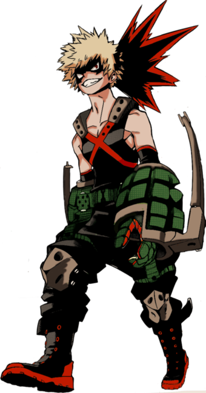

Midoriya Izuku
Izuku Midoriya (緑みどり谷や出いず久く), também conhecido como Deku, é um estudante da U.A, sucessor de All Might e atual usuário do One For All. Ele também é o protagonista de My Hero Academia.
Individualidade: One For All

Boku no Hero Academia (僕ぼくのヒーローアカデミア Boku no Hīrō Akademia/ "Minha Academia de Heróis"), também conhecido como My Hero Academia no ocidente, é uma série de mangá escrita e ilustrada por Kōhei Horikoshi. Os capítulos do mangá são publicados na revista Weekly Shōnen Jump desde julho de 2014, e, até o momento, foram compilados em 24 volumes em formato tankōbon pela editora Shueisha. A série é licenciada e publicada no Brasil pela editora JBC e em Portugal pela Editora Devir. A história segue Izuku Midoriya, um menino que nasceu sem individualidade em mundo que é normal tê-los, mas mesmo assim sonha em se tornar um super-herói. Após ajudar o maior herói do mundo, que fica fraco depois de um tempo por causa de um ferimento, a capturar um vilão, este compartilha os seus poderes, o One for All, com Izuku depois de reconhecer o seu valor e o ajuda a se matricular em uma escola para heróis em formação(a U.A). O mangá explora temas de lei e ordem, ter liberdade com seus poderes ou precisar de licenças. Notamos que vários personagens são punidos por entrar em combate ilegal com um vilão, mesmo em legítima defesa. Tanto que uma das coisas que o grupo de vilões propõem é a liberdade de seus poderes. Se prestamos atenção até certo ponto, todos os personagens são solteiros ou não se envolveram em relacionamentos românticos. A série coloca muito mais destaque em os personagens tornar-se heróis, dando ênfase em amizades e no trabalho em equipe, deixando de lado o romance no anime. Uma grande decepção para os que gostam. O mangá foi adaptado em uma série de anime produzida pelo estúdio Bones; a primeira temporada foi ao ar entre 3 de abril e 26 de junho de 2016; a segunda temporada estreou em abril de 2017,e a terceira temporada estreou em 7 de abril de 2018. Neste anime, vale destacar que certos personagens possuem uma relação maior de amizade, ou, mesmo possuem poderes que juntos formam uma excelente combinação. Um trio a ser destacado é o de Izuku Midoriya, Shoto Todoroki e Katsuki Bakugou.
ㅤㅤㅤㅤㅤㅤㅤㅤㅤㅤㅤㅤ ㅤㅤㅤㅤㅤㅤㅤㅤㅤㅤㅤㅤ ㅤㅤㅤㅤㅤㅤㅤㅤㅤㅤㅤㅤ
ㅤㅤㅤㅤㅤㅤㅤㅤㅤㅤㅤㅤㅤㅤ ㅤㅤㅤㅤㅤㅤㅤㅤㅤㅤㅤㅤㅤㅤㅤㅤ ㅤㅤㅤㅤㅤㅤㅤㅤㅤㅤㅤㅤㅤㅤㅤㅤ ㅤㅤㅤㅤㅤㅤㅤㅤㅤㅤㅤㅤㅤㅤA Individualidade (個性 Kosei) é uma especial, super-humana, que um indivíduo pode possuir. As individualidades são geralmente únicas para seus usuários e são classificadas em diversas categorias. Peculiaridades são herdadas geneticamente através, do que parece ser, herança mendeliana e tipicamente se manifestam em crianças com a idade de quatro anos, no máximo. As crianças ou manifestarão uma das Individualidades de seus pais ou irá surgir uma nova Individualidade formada pela fusão dos dois poderes. Está fusão pode, às vezes, dar a impressão de que a pessoa possui duas individualidades, como no caso da Half-Cold Half-Hot de Shouto. Muito mais raramente, como no caso caso do Rewind da Eri, a criança pode manifestar uma Individualidade que não tenha nenhuma relação com sua linhagem genética, o que se assemelha a uma nova mutação. A primeira pessoa a manifestar sua individualidade foi um bebê recém nascido na cidade de Qingqing na China, que tinha a habilidade de emitir luz de seu próprio corpo. Depois desse incidente muitas pessoas pelo mundo começaram a manifestar diferentes tipos de habilidades especiais. Mesmo a causa do fenômeno das Individualidades serem desconhecidas foi teorizado que a propagação de um vírus transportado por ratos tenha desenvolvido essa situação. Atualmente 80% da população do mundo possui uma Individualidade. Com a chegada dessa extraordinária era a Força de Policia mudou suas prioridades e manteve um status na qual decidiu não utilizar as Individualidades com armas. Para evitar o caos que surgia, a profissão para combater os criminosos que usavam seu poder de forma ilegal, heróis, foi criada. Autorizando o uso de poderes que poderia até mesmo matar foi uma decisão bastante criticada em seu princípio. Com o passar do tempo o publico começou a apoiar a decisão já que os primeiros a trabalharem profissionalmente como heróis agiram de forma moral e defenderam a lei.
ㅤㅤㅤㅤㅤㅤㅤㅤㅤㅤㅤㅤㅤㅤㅤㅤ ㅤㅤㅤㅤㅤㅤㅤㅤㅤㅤㅤㅤㅤㅤㅤㅤ ㅤㅤㅤㅤㅤㅤㅤㅤㅤㅤㅤㅤㅤㅤㅤㅤ ㅤㅤㅤㅤㅤㅤㅤㅤㅤㅤㅤㅤㅤㅤㅤㅤ ㅤㅤㅤㅤㅤㅤㅤㅤㅤㅤㅤㅤㅤㅤㅤㅤ ㅤㅤㅤㅤㅤㅤㅤㅤㅤㅤㅤㅤㅤㅤㅤㅤ ㅤㅤㅤㅤㅤㅤㅤㅤㅤㅤㅤㅤㅤㅤㅤㅤ ㅤㅤㅤㅤㅤㅤㅤㅤㅤㅤㅤㅤㅤㅤㅤㅤ ㅤㅤㅤㅤㅤㅤㅤㅤㅤㅤㅤㅤㅤㅤㅤㅤ
ㅤㅤㅤㅤㅤㅤㅤㅤㅤㅤㅤㅤㅤㅤㅤㅤ
Izuku Midoriya (緑みどり谷や出いず久く), também conhecido como Deku, é um estudante da U.A, sucessor de All Might e atual usuário do One For All. Ele também é o protagonista de My Hero Academia.
Individualidade: One For All
Todoroki Shoto (轟とどろき焦しょう凍と) é um deuteragonista de My Hero Academia. É filho de Endeavor e amigo de Izuku Midoriya.
Individualidade: Meio-quente, meio-frio

Bakugo Katsuki (爆ばく豪ごう勝かつ己き) é um deuteragonista de My Hero Academia. É o rival do protagonista, Izuku Midoriya.
Individualidade: Explosão
